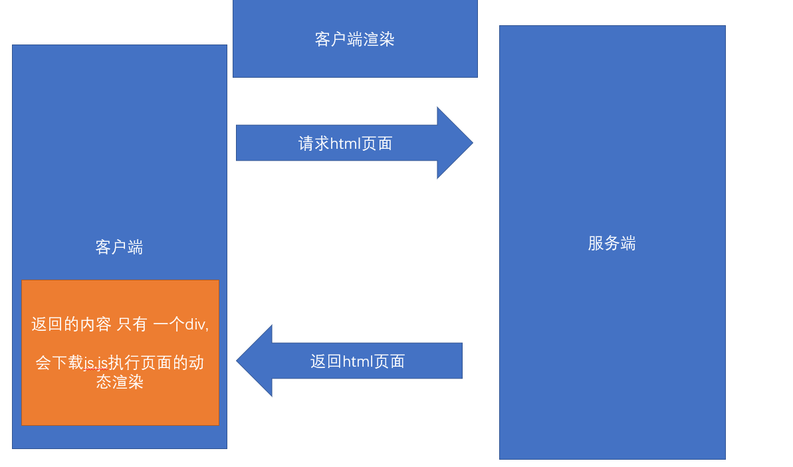
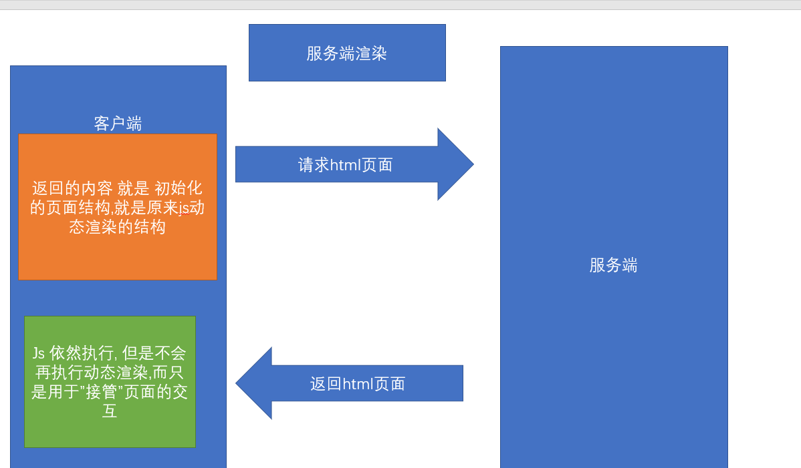
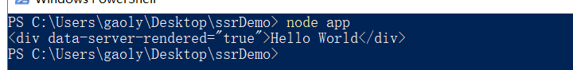
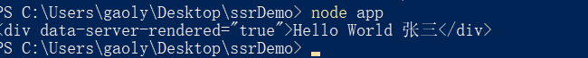
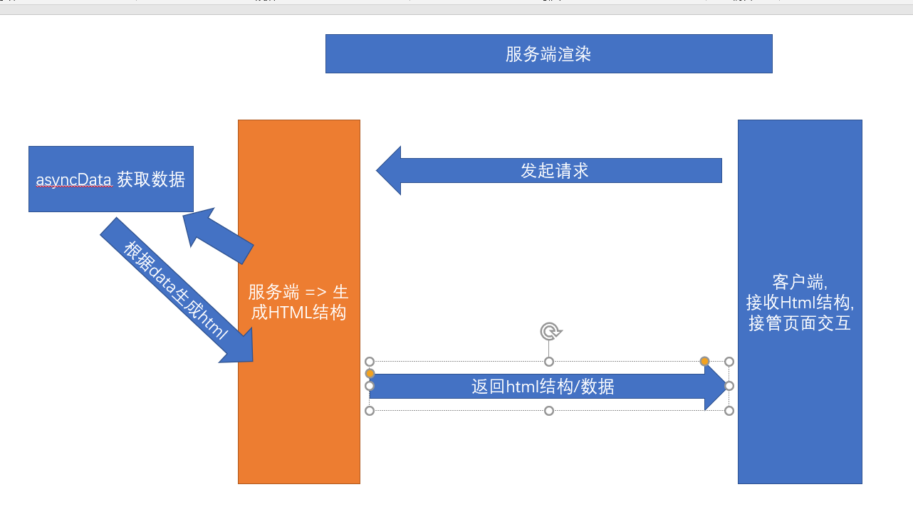

CSR演示和特点 - 客户端渲染
什么是CSR ? 同学们:其实这种类似字母的堆积都是 单词的缩写拼接
Client Side Render , 也就是在客户端渲染,我们请求的Html页面中并没有核心内容,而是需要下载执行 js 文件，由浏览器动态生成页面，并通过 JS 进行页面交互事件与状态管理
简单一句话 : 页面的主体结构是请求完js,由js完成的渲染
客户端渲染的优势是什么?
适合前后端分离开发，方便维护，单页应用中几乎都是客户端渲染,像我们的黑马头条 都是客户端渲染
缺点呢? 难道没缺点?
首次加载慢，不利于 SEO , 因为我们的大部分动态结构 都是在客户端渲染的,后端返回的只是一个空的div,
因为首次加载需要先把js加载完毕,然后才能去渲染
SEO => 搜索引擎优化 => H5页面 => 百度/头条 => 爬虫爬取网页的结构./关键词/语义化标签
上述的效果可通过查看 黑马头条的网页元素进行验证

SSR渲染的演示和特点-服务端渲染
什么是SSR ? 和 CSR一个字之差! SSR其实就是 把Client换成了Server, 客户端渲染变成了服务端渲染
Server Side Render (服务端渲染 SSR)：服务器直接生成 HTML 文档结构 返回给浏览器，但页面交互能力有限。适合于任何后端语言：PHP、Java、Python、Go, ASP 等。aspx => 很多服务器标签
JSP => 服务端渲染 => 服务端标签 => 完成数据的替换 => html => 浏览器
ASP => 服务端渲染 => 服务端标签 => 完成数据的替换 => html => 浏览器
服务端渲染速度更快, 因为直接返回了文档结构,立刻能看到文档效果
相当于 在服务端完成了页面的结构的生成 => 返回生成好的页面结构 =>不需要js请求完毕就有内容
服务端渲染 的优势是什么?
响应速度快(首屏渲染速度快)，有利于 SEO, 不需要等待js, 就好像你访问的是静态页面一样
劣势 ?
- 前后端代码混合在一起，难以开发和维护，不适合进行前后端分离开发
前后一体 => 前后分离 => 服务端渲染 => 中间件(只做服务端渲染) => 服务端(主)
服务端页面返回的内容直接是Html文档结构,不用等到下载完js,再通过js去渲染

Vue的SSR介绍及示例演示
Vue的SSR(服务端渲染)是什么?
Vue.js 是构建客户端应用程序的框架。默认情况下，可以在浏览器中输出 Vue 组件，进行生成 DOM 和操作 DOM。然而，也可以将同一个组件渲染为服务器端的 HTML 字符串，将它们直接发送到浏览器，最后将这些静态标记”激活”为客户端上完全可交互的应用程序。
Vue的SSR代码既包含客户端部分,又包含服务端部分
基于react、vue框架，客户端渲染和服务器端渲染的结合，在服务器端执行一次，用于实现服务器端渲染（首屏直出），在客户端再执行一次，用于接管页面交互，核心解决SEO和首屏渲染慢的问题。
上面这段话的意思是, 在服务端 生成页面结构, 页面结构返回给了客户端浏览器, 然后下载运行js, js同样也会执行,但是并不会再次执行渲染,而是直接接管了页面的交互, 比如点击事件.业务操作
接下来,我们运行一个官方的小例子看看效果
首先,我们需要新建一个文件夹 ssrDemo, 并在该目录下初始化 npm
$ npm init -y 然后,我们来安装 Vue 和 Vue 服务端渲染包
$ npm install vue vue-server-renderer --save然后 在该目录下 新建一个 app.js,内容如下
// 第 1 步：创建一个 Vue 实例
const Vue = require('vue')
const app = new Vue({
template: `<div>Hello World</div>`
})
// 第 2 步：创建一个 renderer
const renderer = require('vue-server-renderer').createRenderer()
// 第 3 步：将 Vue 实例渲染为 HTML renderToString 返回一个promise
renderer.renderToString(app).then(html => {
console.log(html)
}).catch(err => {
console.error(err)
})我们可以直接用命令执行 看看能输出什么内容
$ node app
试着写一些动态内容
const Vue = require('vue') // 为什么不能用import 因为这里是后端代码
const render = require('vue-server-renderer')
// 服务端渲染包 此模板 可以获取vue实例的html内容
const SSR = render.createRenderer() // 创建一个 服务端渲染实例化对象
// 第一步 创建一个vue实例
const app = new Vue({
template: `<div>Hello world :{{ name }}</div>`,
data: {
name: '程序猿'
}
})
// 第二步 对vue实例进行 渲染 得到其html结构
SSR.renderToString(app).then(html => {
// 得到渲染的结构
console.log("得到服务端渲染的结构是:" + html)
}) // 将组件或者vue实例化 转化成字符串
// 我们要将这个结果 返回浏览器 浏览器直接显示这个结构 这就是服务端渲染
我们发现代码动态数据直接渲染成了真正的字符串
OK, 既然可以生成最终的页面字符串, 我们可以和express进行结合,写一个最终版的服务端渲染示例
首先安装express
$ npm i express然后新建 server.js , 将 app.js 的数据进行返回
首先,将app.js的内容导出
const Vue = require('vue') // 为什么不能用import 因为这里是后端代码
const render = require('vue-server-renderer')
// 服务端渲染包 此模板 可以获取vue实例的html内容
const SSR = render.createRenderer() // 创建一个 服务端渲染实例化对象
// 第一步 创建一个vue实例
const app = new Vue({
template: `<div>Hello world :{{ name }}</div>`,
data: {
name: '程序猿'
}
})
// // 第二步 对vue实例进行 渲染 得到其html结构
// SSR.renderToString(app).then(html => {
// // 得到渲染的结构
// console.log("得到服务端渲染的结构是:" + html)
// }) // 将组件或者vue实例化 转化成字符串
module.exports = SSR.renderToString(app) // 直接导出 promise对象
// 我们要将这个结果 返回浏览器 浏览器直接显示这个结构 这就是服务端渲染然后,在server.js 中通过express 开启服务端口监视,并将导出的模板字符串 进行返回,代码如下
var server = require('express')() // 实例化web服务
var app = require('./app')
server.get('/', function (request, response) {
// 当请求地址是/ 进行处理
app.then(html => {
response.send(`
<!DOCTYPE html>
<html lang="en">
<head>
<meta charset="UTF-8">
<meta name="viewport" content="width=device-width, initial-scale=1.0">
<title>大家好,老高的课结束在即</title>
</head>
<body>
${html}
</body>
</html>`)
// 需要把动态渲染的内容直接返回
})
})
server.listen(10086,function () {
console.log("您的web服务启动了,访问地址 http://localhost:10086/")
})OK了, 访问对应的地址 ,通过审查元素,我们发现返回的页面直接是已经组装好的页面结构,
同志们! 这就是纯服务端渲染
Nuxt介绍
上个小节中,我们的服务端内容觉得还好啊,不难啊,挺好用啊 ,
But!真实的案例往往超乎你的想象,我们并不可能只返回一个字符串,然后没有任何交互, 交互只能在客户端做啊!
服务端渲染=> 解决首屏渲染问题,SEO不够友好
怎么办? 我们并不是只有服务端内容, 不能为了解决这个问题,把交互给丢了
所以在既有服务端,又有客户端的情况下,我们的代码好像并不能用了
此时 带来第三方基于Vue的服务端渲染框架Nuxt
需要大家注意的是:
- Nuxt
不是Vue官方提供的 - Nuxt是
基于Vue的服务端渲染的框架 - Nuxt.js 预设了利用 Vue.js 开发
服务端渲染的应用所需要的各种配置。
nuxt有什么作用?
基于 Vue、Webpack 和 Babel Nuxt.js 集成了以下组件/框架，用于开发完整而强大的 Web 应用：
- Vue 2
- Vue-Router
- Vuex (当配置了 Vuex 状态树配置项 时才会引入)
- Vue 服务器端渲染 (排除使用
mode: 'spa') - Vue-Meta
看到了没?
vue-cli 是 vuejs 官方的脚手架, 用来开发纯前端项目,不负责服务端渲染
nuxt脚手架 是 第三方团队推出的, 和vue-cli 半毛钱关系没有
Nuxt里面拥有我们开发纯前端项目的一切配置,用于开发完整强大的web应用
我们用了nuxt,我们的项目就不再是一个纯前端项目了, 而是一个包含服务端渲染的前后端项目
服务端 + 客户端 => nuxt项目 ,并不会丢弃我们原来的前端内容
只不过 把每个组件的首屏渲染放在了 服务端 而不是客户端
Nuxt创建项目
说了这么半天, Nuxt怎么用, 我们怎么用它开发项目?
来做个例子看看吧
首先我们来新建个文件夹 nuxtDemo 初始化 npm
$ npm init -y 然后在package.json中配置 一个 调试启动命令,启动命令是nuxt
{
"name": "nuxtDemo",
"version": "1.0.0",
"description": "",
"main": "index.js",
"scripts": {
"dev": "nuxt"
},
"keywords": [],
"author": "",
"license": "ISC"
}
安装 nuxt依赖包,这是 服务端渲染的关键
$ npm i nuxt --save在根目录下 新建
pages, 特别注意: 这里 只能叫pages,不能起别的名字
在 pages新建一个组件 home.vue,内容如下
水若寒宇
刘备
{{ new Date().toDateString() }}
组件建立好之后, 运行nuxt项目
$ npm run dev项目启动成功,我们访问对应的端口,一个nuxt的项目被创建好了
我们会发现,在项目中多了一个.nuxt文件夹, 这个文件夹 是 编译客户端和服务端代码的结果
我们pages下的home组件会自动帮我们生成 对应的路由的下的组件,
而且pages新建组件 也会完成路由的新建和自动重启
以后百分之九十 还是 Vue的spa项目
vue-cli 做的前后分离项目 => 纯客户端渲染
Nuxt并不是官方的 => 解决首屏渲染慢的问题 => 一般只会做一个页面
双11 => 大流量访问页面的时候 => 首页做成服务端渲染项目
一般来讲,服务端渲染只需要做首页
Nuxt路由的动态路由
Nuxt会帮我们生成对应的路由,但是 我们之前学过 动态路由怎么办
- 动态路由
原来在 单页spa项目中,我们需要给 路由规则一个 参数 { path: ‘/user/:id’ },
然后传递一个 通过 /user/123 来传递参数
在nuxt中怎么实现呢
nuxt项目中 标签跳转, 直接用nuxt-link标签, 相当于原来的router-link
主页 nuxt-link标签只能在nuxt项目中使用,不能在原来的vue-cli项目中使用
在 Nuxt.js 里面定义带参数的动态路由，需要创建对应的以下划线作为前缀的 Vue 文件 或 目录。
假如你想 实现 /users/:id 的动态路由,你需要建立一个users文件夹, 然后 在该文件夹下
创建一个以下划线为前缀的文件 _id.vue
以下目录结构：
pages/
--| users/
-----| _id.vueNuxt.js 生成对应的路由配置表为：
router: {
routes: [
{
name: 'users-id',
path: '/users/:id?',
component: 'pages/users/_id.vue'
}]
}你会发现名称为 users-id 的路由路径带有 :id? 参数，表示该路由是可选的。如果你想将它设置为必选的路由，需要在 users/_id 目录内创建一个 index.vue 文件。
我们可以尝试一下
动态路由中 ? 的含义是什么?
可传可不传 { path: ‘/user/:id?’ ,component: {} } => 如果你传的地址 是 /user/1 => 匹配组件
如果你传的地址 是 /user => 匹配组件
{ path: ‘/user/:id’ ,component: {} } => 只能匹配 /user/1
Nuxt的asyncData 和生命周期
Nuxt.js 扩展了 Vue.js，增加了一个叫
asyncData的方法，使得我们可以在设置组件的数据之前能异步获取或处理数据。
nuxt => 服务端渲染 => 返回的页面结构 是需要数据的, 需要返回页面结构之前 进行 ajax请求
Vue.js => 实例创建前后 / 页面渲染前后 / 数据更新前后 / 组件卸载前后
Nuxt.js => asyncData事件 => 会在服务端渲染初始化的时候 调用
asyncData方法会在组件（限于页面组件,在pages下的组件）每次加载之前被调用。它可以在服务端或路由更新之前被调用。 在这个方法被调用的时候，第一个参数被设定为当前页面的上下文对象，你可以利用 asyncData方法来获取数据，Nuxt.js 会将 asyncData 返回的数据融合组件 data 方法返回的数据一并返回给当前组件。

注意：由于asyncData方法是在组件 初始化前 被调用的，所以在方法内是没有办法通过 this 来引用组件的实例对象。 这个asyncData方法 是相当于在后端调用发起了请求,并将数据和data中的数据进行了融合, 这些数据会返回前端,交接给前端的交互
asyncData 函数 需要返回一个对象,返回的对象会和Vue中的对象进行融合,合并
asyncData中不能用this !
尝试做个例子吧! 这里提供一个获取数据的接口, 我们可以在asyncData中 尝试请求,并进行服务端数据的渲染
首先,我们得给我们的nuxt项目安装一个请求工具,也就是axios
axios 可以在客户端使用,也可以在nodejs后端使用
$ npm i axios 然后在pages新建一个 asyncList.vue组件,内容如下
水若寒宇
{{ item.name }}
{{ new Date().toDateString() }}
通过上面的示例,我们可以看出,直接返回的html页面是一个渲染好的页面,但是我们依然从devtools中发现了 list数据,这说明首次渲染,已经将提前在
服务端将内容渲染好, 到达前端之后,前端实现了接管,
同学们,这就是真正的服务端渲染!
需要注意的是，在任何 Vue 组件的生命周期内， 只有 beforeCreate 和 created 这两个方法会在 客户端和服务端被调用。其他生命周期函数仅在客户端被调用。
也就是 created会在服务端执行一遍,又会在客户端执行一遍,所以如果我们在created中加载数据, 就会重复两次,
利用Nuxt脚手架开展项目实例
上面我们使用nuxt是纯手工创建的, 目的是让大家熟悉,实际上nuxt也有脚手架 帮我们创建项目
怎么玩?
首先肯定是先读文档
首先,nuxt也有脚手架来帮助我们创建一个服务端渲染的项目,so,开整
$ npx create-nuxt-app heima # npx是npm自带的一个工具 它每次都会下载最新包 heima 是一个项目名然后是一系列的窒息选择操作 , 我们选择 Element(UI框架) +express(web服务框架) +
Axios(Nuxt模块) +Eslint(语法校验) +SSR(服务端渲染)
上面这些选择是nuxt给我们提供好的选项,创建好之后,我们将切到目录下 运行并且访问项目
$ yarn dev # 使用yarn
$ npm run dev # 使用 dev
访问 localhost:3000
Nuxt脚手架-开发黑马头条PC的登录和数据首页
老铁们,这个nuxt已经让我们创建好项目并且启动起来了,我们要做什么呢?
可否还记得大明湖畔做过的黑马头条PC项目 ?
什么 ? 完全没印象 !
没印象没关系,这里奉上老铁的git仓库地址
我们的目的是 平移一两个黑马头条的页面过来
开整
首先,先把黑马头条的仓库克隆下来, 由于我们黑马头条使用了elementUI, 所以当初创建nuxt项目,我们也用了elementUI
注意, 原来我们的项目用了less预处理器,但是 nuxt并没有,所以首先给我们的项目增加less 依赖
$ npm i less less-loader # 安装less 和less-loader其次,我们黑马头条用了一些资源图片,把资源图片拷贝到nuxt目录相等位置,这样可以保证代码几乎不用更改任何内容
接下来,我们先平移 登录页面login,直接将login文件夹 拷贝到nuxt项目的pages下
login/index.vue

发送验证码
我已阅读同意用户协议和隐私条款
登录
拷贝过去之后,我们访问 localhost:3000/login ,我们发现一切OK, 页面没有任何问题,
真是nice!
并且,我们之前做的很多校验,正则都能正常之前,这是因为服务端首屏渲染, 内容和逻辑被客户端正常接管,
除了首屏在服务端完成,一切都还和原来一样!
创建项目的时候,选了axios模块, 这个axios模块实际上赋值了Vue的全局对象 名字就叫 $axios
this.$axios => 直接获取的就是 创建项目时 所选择的axios
但是这里有个问题,就是我们的axios,请求 的baseUrl没有设置 ,在哪里设置呢?
找到nuxt.config.js文件
设置 axios 属性的baseUrl即可,注意 改完这个配置需要重新启动
axios: {
baseURL: 'http://ttapi.research.itcast.cn/mp/v1_0/'
},点击登录成功,我们会进入home组件
老高带你做一个新的home组件, 展示实时的疫情数据, 小递归 ,树形
时间关系,我们对nuxt只是简单进行了一下了解,实际上还有内容可以做,希望大家通过通过nuxt官网来认识更多的功能